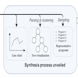

March 2025: Our paper "Sequencer Level Security" has been accepted as a poster at ICBC 2025! See you in Rome – this technique is the main innovation behind Zircuit.

I am a PhD student at University of Toronto, luckily supervised by Prof. Fan Long.
Prior to that, I was advised by Prof. Xinyu Wang at UMich where we worked on multiple program synthesis projects.
My current research focuses on blockchain scaling with zero knowledge proofs and program analysis/synthesis for smart contracts. I'm generally interested in Programming Languages, Software Engineering, Security, and Cryptography.
I'm also working as a Research Engineer at Zircuit. Previously, I worked at Quantstamp.
News
March 2025: Attended ETH Denver as a hackathon judge and company booth presenter. Super excited to chat with industrial experts! [Tweet]
March 2025: Attended SANER 2025 and was thrilled to present our paper on "Instrumenting Transaction Trace Properties in Smart Contracts: Extending EVM for Real-Time Security".
Feb 2025: Zircuit's roadmap for 2025 was released: two of my papers have been integrated and will be the focus. Read more: Zircuit Technical Roadmap Part II: Scaling Securely
Jan 2025: Our paper "Instrumenting Transaction Trace Properties in Smart Contracts: Extending EVM for Real-Time Security" has been accepted for publication at SANER-IWBOSE 2025. See you in Montreal!
Dec 2024: Our paper "A Methodology for Replicating Historical Exploits on EVM-Compatible Blockchains" has been accepted for publication at ICSE-WETSEB 2025. See you in Ottawa!
Education
University of Toronto
PhD in Computer Science, 2026 (Expected)
Advisor: Prof. Fan Long
University of Michigan, Ann Arbor
Bachelor of Engineering in Computer Science, minor in Mathematics, Summa Cum Laude, Sept 2019 - May 2021
Advisor: Prof. Xinyu Wang
Shanghai Jiao Tong University
Bachelor of Science in Electrical and Computer Engineering, minor in Entrepreneurship, Sept 2017 - Aug 2021
Publications
Academia
Zhiyang Chen, Ye Liu, Sidi Mohamed Beillahi, Yi Li, Fan Long, “OpenTracer: A Dynamic Transaction Trace Analyzer for Smart Contract Invariant Generation and Beyond (ASE 2024 Tool Demonstrations)” [paper] [artifact] [slides] [video]
Zhiyang Chen, Ye Liu, Sidi Mohamed Beillahi, Yi Li, Fan Long, “Demystifying Invariant Effectiveness for Securing Smart Contracts (FSE 2024)” [paper] [artifact] [benchmarks] [invariant study results] [slides] [poster]
Zhiyang Chen, Sidi Mohamed Beillahi, Fan Long, “FlashSyn: Flash Loan Attack Synthesis via Counter Example Driven Approximation (ICSE 2024)” [paper] [extended paper] [artifact] [slides]
Tianyi Zhang, Zhiyang Chen, Yuanli Zhu, Priyan Vaithilingam, Xinyu Wang, Elena L. Glassman, “Interpretable Program Synthesis”, Proceedings of CHI 2021 [paper] [video] [artifact]
Industry
Martin Derka, Jan Gorzny, Diego Siqueira, Donato Pellegrino, Marius Guggenmos, Zhiyang Chen, “Sequencer Level Security”, IEEE International Conference on Blockchain and Cryptocurrency (ICBC 2025 Poster)
Zhiyang Chen, Phillip Kemper, Yi Liu, Jan Gorzny, Diego Siqueira, Yuekang Li, Donato Pellegrino, and Martin Derka, “A Methodology for Replicating Historical Exploits on EVM-Compatible Blockchains”, 7th International Workshop on Emerging Trends in Software Engineering for Blockchain (ICSE-WETSEB 2025)
Zhiyang Chen, Jan Gorzny, Martin Derka, “Instrumenting Transaction Trace Properties in Smart Contracts: Extending EVM for Real-Time Security”, 8th International Workshop on Blockchain-Oriented Software Engineering (SANER-IWBOSE 2025)
Awards & Grants
- ACM SIGSOFT CAPS Travel Grant, ACM SIGSOFT CAPS
- DCS Travel Grant, University of Toronto
- Bell Graduate Scholarship, University of Toronto
- Mitacs Accelerate Fellowship with Bank of Canada, University of Toronto, 2023-2024
- Co-author of Ethereum Foundation Grant FY23-0882 (Back-End API Standard for L2 Block Explorers), 2023
- The Wolfond Scholarship in Wireless Information Technology, University of Toronto, 2021
- Outstanding graduate of Shanghai Jiao Tong University, 2021
- James B. Angell Scholar, UMich, 2021
Services & Teaching
Services
- Artifact Evaluation PC Member, CAV 2025 2025
- Reviewer, Automated Software Engineering(a journal of Springer) 2025
- Reviewer, IEEE Transactions on Software Engineering (TSE) 2025
- Reviewer, ACM Transactions on Software Engineering and Methodology (TOSEM) 2025
- Junior PC Member, The Mining Software Repositories (MSR) 2025
- Reviewer, IEEE Transactions on Network and Service Management (TNSM) 2024, 2025
- Artifact Evaluation PC Member, ICSE 2025 2025
- Artifact Evaluation PC Member, PLDI 2024 2024
- Sub-reviewer, FSE 2023, ICSE 2024, ASE 2024 2022-2023
- Student Volunteer(Remote), OOPSLA 2022 2022
- Tau Beta Phi-Michigan Gamma, elected in Nov 2020 (participating in K12 and professional activities) 2020
Teaching
- Head TA of CSC488/2107: Compilers and Interpreters, UofT Winter 2023
- TA of CSC373: Algorithm Design, Analysis & Complexity, UofT Fall 2022
- TA of CSC263: Data Structures and Analysis, UofT Winter 2022
- TA of CSC108: Introduction to Computer Programming, UofT Fall 2021
- Grader of MATH 450 Advanced Mathematics for Engineers I, UMich Winter 2021
- Grader of MATH 214 Linear Algebra, UMich Fall 2020
Miscellaneous
- Update (2025/03): I roughly found my research taste now - “dig deep enough, the novelty just comes out naturally.”
- My signature tagline: “I'm a dreamer, but I'm also practical enough to version control it.”
- I volunteer at the Toronto Fort York Food Bank, helping distribute food.
- I also volunteer at the Toronto Cat Rescue, where I help foster cats at home.
- (2024/08) I started investigating the 'philosophy' in my Doctor of Philosophy program. In the future, I might write down this journey.
- Pirates of the Caribbean is my favorite movie. I want to be a Pirate.
- I'm not religious, but I'm an afterlife believer: people will either reunite with their deceased loved ones in another world or return back to this world in another form.
Finished Undergraduate Research Projects
Click to Expand Projects

Accelerate Regular Expression Synthesis via Subexpression Queries
Individual research project of EECS499
with Prof. Xinyu Wang
[report]
This project proposes an algorithm to synthesize the most probable sub-expressions of a ground-truth regular expression based on input–output examples and evaluates the effectiveness of subexpression queries.

Interpretable Program Synthesis
CHI '21: Proceedings of the 2021 Conference on Human Factors in Computing Systems
with Tianyi Zhang, Xinyu Wang, Elena Glassman
This work unveils the synthesis process by providing representations that explain and let users guide the program synthesis with varying levels of detail.

Real-Time and Virtual Driving Simulator
Project of Multidisciplinary Design Program
with Prof. Paul Green
[2-min presentation slides] [code]
This project presents a GUI tool designed to assist researchers in conducting traffic experiments using the CARLA real-time driving simulator.